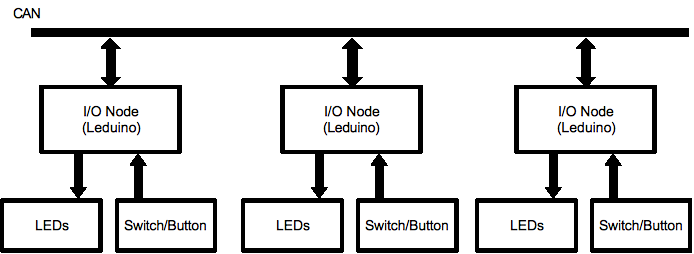

Illustration 1: Two shields demonstrating Blue/Gold programming.
2) Computer Interface
Brief description of proposed demos for NMRA 2010 summer meeting with a more detailed To-Do list and notes here
Constraints:
Portable
Limited amount of hardware available
Want to demonstrate real working system and hopefully knock their socks off...
Here's a link to Bob's Demo Hardware that he will take to the Convention

Show
that initialization of multiple nodes doesn't require anything. Add
the 3rd node “out of box”, show that it starts up and
can be easily configured.

Add a computer via USB connection and show that everything still works. Demonstrate computer responding to hardware events, and hardware responding to computer events. Plan to do this demonstration second, as the first example doesn't need a computer in any way.

Demo Ethernet connection by adding a computer via ethernet-CAN adapter; show that's also plug-and-play.
Diagram shows two computers because the Ethernet connection is added to Demo 3 without reconfiguring anything.

Two CAN segment communicating over Ethernet without a PC doing any intervention, e.g. for a modular layout setup. Want to script the demo to make it clear that we're combining independent systems, which can still interoperate. That might need two nodes on each CAN segment, to show they don't have to be reprogrammed.
Additionally, want to demonstrate filtering, perhaps by traffic LEDs on the two networks behaving differently.
Here is a picture of Bob's “portable” Demo 4 system, which had only 2 leaf nodes.


Basic idea is to have LocoNet events coexist with P/C NMRAnet events, and to move LocoNet from one place to another over an NMRAnet backbone. May be limited by available hardware.
Three LEDuinos fitted out to demo I/O (at least two switches/pushbuttons, two LEDs, a few more is better; some need buttons/LEDs for blue/gold too)
Two LEDuinos with Ethernet hardware
Ethernet switch, cables, etc
One LEDunio for USB-CAN adapter (could be same as one of the above, but better not; commercial adapter also OK)
Two LEDuinos for LocoNet interfaces (could be some of above; decide whether to load new code for new function on fly during demo or not)
Two passive LocoNets: cables, power
Two SE8c boards with LEDs (masts) and switches/buttons
Power supplies
Two sets CAN cabling
Can we demo CBUS hardware in one of these?
Running “representative” signals?
On a demo track?